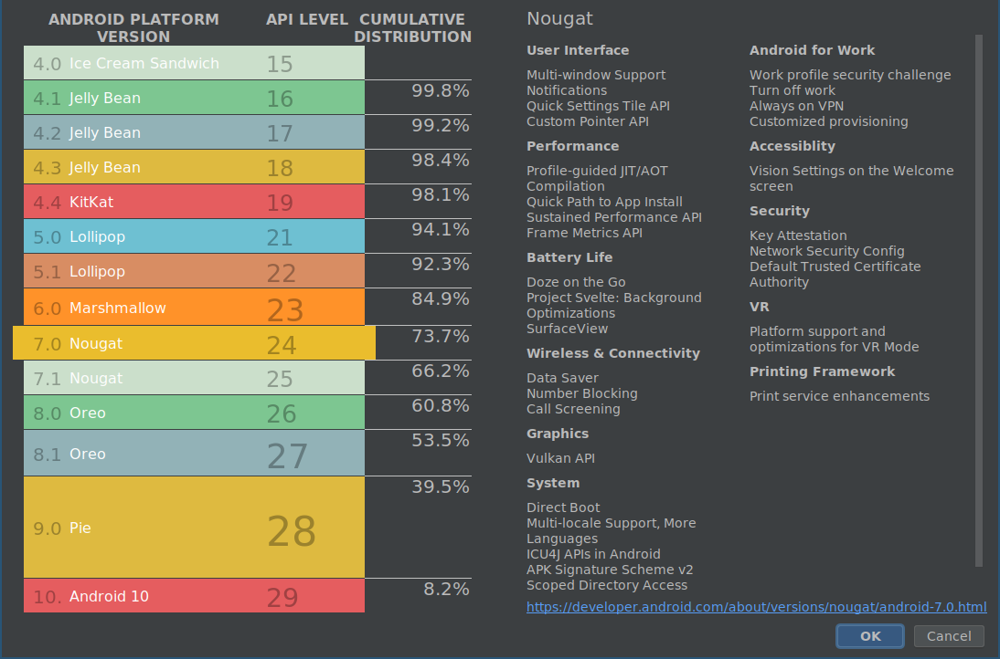

Versiuni Android
Pana in acest moment au fost lansate mai multe versiune de Android. In tabelul de mai jos le putem observa.
| Versiune Android | Nivel API | Data Lansării | Nume de Cod | Cota de Piață |
|---|---|---|---|---|
| 10 | 29 | 03.09.2019 | ?? | 0.?% |
| 9 | 28 | 21.08.2017 | Pie | 0.?% |
| 8.1 - 8.1 | 26-27 | 21.08.2017 | Oreo | 0.?% |
| 7.1 - 7.1.1 | 25 | 04.10.2016 | Nougat | 0.3% |
| 7.0 | 24 | 22.08.2016 | Nougat | 0.9% |
| 6.0 - 6.0.1 | 23 | 05.10.2015 | Marshmellow | 30.7% |
| 5.1 - 5.1.1 | 22 | 09.03.2015 | Lollipop | 23.1% |
| 5.0 - 5.0.2 | 21 | 12.11.2014 | Lollipop | 9.8% |
| 4.4W - 4.4W.2 | 20 | 25.06.2014 | KitKat ext | |
| 4.4 - 4.4.4 | 19 | 31.10.2013 | KitKat | 21.9% |
| 4.3 | 18 | 24.07.2013 | Jelly Bean | 1.6% |
| 4.2.x | 17 | 13.11.2012 | Jelly Bean | 5.7% |
| 4.1.x | 16 | 09.07.2012 | Jelly Bean | 4.0% |
| 4.0.3 - 4.0.4 | 15 | 16.12.2011 | Ice Cream Sandwich | 1.0% |
| 4.0 - 4.0.2 | 14 | 19.10.2011 | Ice Cream Sandwich | |
| 3.2 | 13 | 15.07.2011 | Honeycomb | |
| 3.1 | 12 | 10.05.2011 | Honeycomb | |
| 3.0 | 11 | 22.02.2011 | Honeycomb | |
| 2.3.3 - 2.3.7 | 10 | 09.02.2011 | Gingerbread | 1.0% |
| 2.3 - 2.3.2 | 9 | 06.12.2010 | Gingerbread | |
| 2.2 - 2.2.3 | 8 | 20.05.2010 | Froyo | |
| 2.1 | 7 | 12.01.2010 | Eclair | |
| 2.0.1 | 6 | 03.12.2009 | Eclair | |
| 2.0 | 5 | 26.10.2009 | Eclair | |
| 1.6 | 4 | 15.09.2009 | Donut | |
| 1.5 | 3 | 30.04.2009 | Cupcake | |
| 1.1 | 2 | 09.02.2009 | ||
| 1.0 | 1 | 23.09.2008 |

Pentru identificarea versiunilor se folosesc, de regulă, trei sisteme:
- un număr, ce respectă formatul major.minor[.build], desemnând dacă modificările aduse sunt substanțiale sau reprezintă ajustări ale unor probleme identificate anterior; versiunea curentă este 10, lansată la sfârșitul anului 2019;
- un nivel de API (același putând grupa un număr de mai multe versiuni), prin care se indică funcționalitățile expuse către programatori; versiunea curentă are nivelul de API 29;
- o denumire, având un nume de cod inspirat din lumea dulciurilor; termenii respectivi încep cu inițiale care respectă ordinea alfabetică; versiunea curentă este Q.
În momentul în care se ia decizia cu privire la versiunea pentru care se dezvoltă o aplicație Android, trebuie avute în vedere și cotele de piață ale dispozitivelor mobile. Dezvoltarea unei aplicații Android pentru cea mai nouă versiune are avantajul de a se putea utiliza cele mai noi funcționalități expuse prin API. Dezvoltarea unei aplicații Android pentru cea mai veche versiune are avantajul unei adresabilități pe scară largă. Un compromis în acest sens poate fi obținut prin intermediul bibliotecilor de suport, dezvoltate pentru fiecare versiune, prin intermediul cărora pot fi utilizate la niveluri de API mai mici funcționalități din niveluri de API mai mari (în limita capabilităților dispozitivului mobil respectiv). Utilizarea acestora reprezintă o practică recomandată în dezvoltarea aplicațiilor Android.